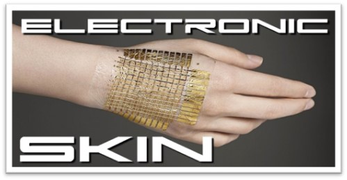
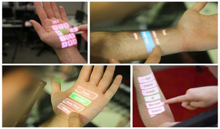
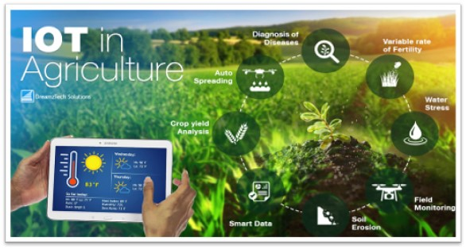
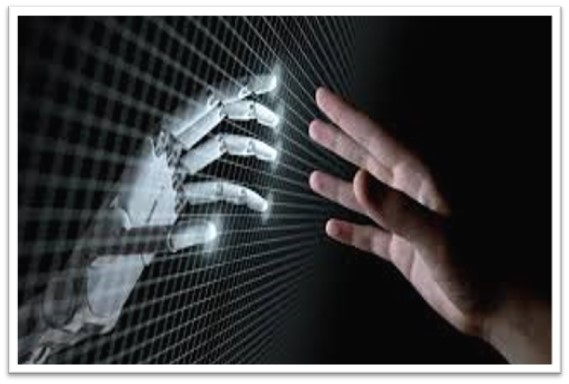
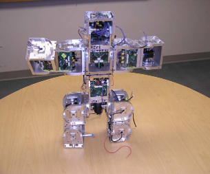

"In the symphony of academia, a well-crafted paper presentation is the crescendo that captivates the audience."
AUGMENTED REALITY

Augmented reality is a technology of combining real world images,videos etc with computer genrated information.In simple words AR is the real world with an added virtual connection(2D/3D).
AR has enormous applicatians in various field which includes
Agriculture
Architecture
Visual art
Healthcare planning
Industrial design
Military
Translation
Augmented reality is another step further into the digital age as we will soon see our environments change dynamically either through a smartphone, glasses, car windshields and even windows to display enhanced content and media right in front of us.
E SKIN
E SKIN is a flexible, stretchable and self-healing electronics that are able to mimic functionalities of human or animal skin, which brings many potential applications in robotics, artificial intelligence, prosthetics, and health monitoring technologies.Electronic skin (e-skin), which is an electronic surrogate of human skin, aims to recreate the multifunctionality of skin by using sensing units to detect multiple stimuli, while keeping key features of skin such as low thickness, stretchability, flexibility
It helps the body to adjust after the transplant. Possibly can return feeling to patients with transplants.It can make robots more sensitive, enabling them to carry out a variety of new functions.The use of tiny electronic wires allows the skin to generate impulses, similar to that of the body's own nervous system.
Applications of E SKIN
Bio medical devices
Robotics
Optoelectronics
Prosthetics
Healthcare
The electronics devices gain more demand when they are compact in size and best at functioning. The Artificial Skin is one such device which depicts the beauty of electronics and its use in daily life.Developing flexible, stretchable, and robust e-skins integrated with multi-functionalities and compatible with large-area implementation could be the research focus in the near future.


IOT IN AGRICULTURE

The main objective of this presentation is to have ZERO HUNGER,
It is also focussed on helping farmers close the supply demand gap, by ensuring high yields, profitability and protection of the environment.it is used to achieve high crop yields and reduce operational costs.
Remote monitoring of farm conditions and infrastructure, saving time and labour on routine farm checks.Faster and quicker insights from real-time data across the value-chain, helping farmers respond to what the market wants.
Efficiency in how we produce food to ensure less wastage, expediency to market, and enhanced traceability to demonstrate safe and sustainable food to our customers
IOT is ushering in a new era of smart farming to allow farmers to grow crops in a more controlled and productive manner, and facilitate better utilization of land through proper crop selection and enhanced monitoring the soil, irrigation, temperature, plant health and other critical aspects that impact the yield.The IOT bring efficiency to the agricultural space, and create a virtuous cycle that makes food products more readily available to consumers, saves farmers time and money, and lessens the environmental impact of farming by driving sustainability into the process.
FRACTAL ROBOTS
A fractal is anything which has a substantial, measure of exact or statistical self-similarity. A fractal is a geometric pattern that exhibit self similarity at different scales. Wherever you look at any part of its body it will be similar to the whole object like they have similar patterns and shapes that can be repeated and scaled down or up. They are made up of smaller, identical or similar components that can be assembled into larger structures. They have the potential to be more versatile and adaptable than traditional robots because of their ability to adapt to different environments and tasks.
Fractal robots have a highly flexible and adaptable structure that allows them to move and operate in complex environments.Fractal robots can be designed to perform a wide range of functions, from sensing and monitoring to manipulation and assembly. Fractal robots can be programmed to self-replicate, which could potentially reduce the cost of production and deployment.
Applications of Fractal Robots
Used in Bridge building, fire fighting
Used in space exploration and other scientific mission to collect data and perform tasks in remote or hostile environments
Used in disaster relief and search and rescue operations to locate and extract survivors.
Fractal robots have the potential to revolutionize the field of robotics with their unique design and capabilities.The future of fractal robots is exciting, and we look forward to seeing the innovative ways in which they will be used to solve some of the world's most pressing challenges.

